フジテレビNEXT ライブ・プレミアム
「FACTORY ARCHIVES」ザ・クロマニヨンズの回をスマホで観る
1998年から2016年まで放送されたライブ番組「FACTORY」。その名演をアーティストごとに再放送する「FACTORY ARCHIVES」で、ザ・クロマニヨンズの回が放送されます。スカパー!に加入すれば、スマホやPCでも見られます。
見るために必要なこと
フジテレビNEXT ライブ・プレミアムは有料チャンネルです。スカパー!に加入してこのチャンネルを契約すると、契約者向けの「スカパー!番組配信」で、スマホ・タブレット・PCから見られます（1アカウント3台まで）。
契約には、テレビかレコーダーのB-CASカード/ACAS番号が必要です。スカパー!番組配信だけで見る場合も同じです。番号はテレビ・レコーダーの設定画面や、差し込んであるカードで確認できます。
申し込みの流れ
- スカパー!に申し込む下のボタンからスカパー!の申し込みページへ進みます。
- 「フジテレビNEXT ライブ・プレミアム」を選ぶ契約するチャンネルとして選びます。1チャンネルから契約できます。
- ID登録・B-CAS/ACAS番号・支払い方法を入力して申し込むスカパー!メンバーズIDを登録し、テレビ・レコーダーの番号と支払い方法を入力します。
- スカパー!番組配信にログインするスマホ・タブレットはアプリ「スカパー!番組」、PCはスカパー!公式サイトから、契約したアカウントでログインします。
- 放送日に見る番組表で放送日時を確かめて、当日に視聴します。
スカパー!の公式サイトへ移動します
料金（税込）
| フジテレビNEXT ライブ・プレミアム 視聴料 | 2,580円/月 |
| スカパー! 基本料 | 429円/月 |
| 合計 | 3,009円/月 |
スカパー!は、加入した月（1日〜月末）の視聴料・基本料がかかりません。料金は翌月分からです。
| 10月に加入した場合 | 10月分 無料／11月分から有料 |
| 11月に加入した場合 | 11月分 無料／12月分から有料 |
ただし、加入した月は解約できず、解約した月の分まで料金がかかります。11月に加入してすぐ解約しても、12月分の3,009円はかかります（最低1か月分）。
10月・11月の注目番組
加入すると、クロマニヨンズの回のほかにも、こんな番組が見られます。「スマホOK」の番組は、スカパー!番組配信でスマホ・PCからも見られます。
ロック・音楽
- 10/7(水) 19:00〜22:00オハラ☆ブレイク'25 A GO GO 愛し合ってるかい忌野清志郎とRCサクセションのデビュー55周年を記念し、清志郎の世界一色で開かれた猪苗代湖畔のフェス。甲本ヒロト、奥田民生、吉川晃司、仲井戸麗市、GLIM SPANKY、The Birthday、志磨遼平（ドレスコーズ）、清水ミチコ、ワタナベイビー、のん、古市コータロー などが見られます。スマホOK
- 10/9(金) 19:40〜21:10オアシス LIVE AT WEMBLEY STADIUM 20002000年7月、ウェンブリー・スタジアム2日間公演のうち21日の公演をまるごと。スマホOK
- 10/15(木) 19:00〜21:00吉井和哉 TOUR2025/26 IVIVI BLOOD MUSIC 日本武道館公演4年ぶりのソロ日本武道館、2025年12月28日公演。スマホOK
- 10/17(土) 17:00〜19:30Saucy Dog DOME LIVE 2026 “A NEW DAWN” Special Edition京セラドーム大阪公演に、舞台裏の映像を加えた特別版。スマホOK
- 10/19(月)・20(火) 21:00〜25:00VIVA LA ROCK 2026埼玉スタジアム2002周辺で一度限りの野外開催。4日間を合計8時間で。羊文学、あいみょん、ASIAN KUNG-FU GENERATION、Suchmos などが見られます。スマホOK
- 10/22(木)・23(金) 19:00〜21:00SATANIC CARNIVAL 2026PIZZA OF DEATH RECORDS が立ち上げたパンク・ラウドロック・ハードコアの祭典。合計4時間。Ken Yokoyama、サバシスター、打首獄門同好会 などが見られます。スマホOK
- 10/22(木) 21:00〜23:00「女は女である。」〜野宮真貴デビュー45周年前夜祭＆バースデー・ライブ〜ゲストに小泉今日子とYOU。テレビのみ（ネット配信なし）
- 10/23(金) 23:00〜23:50FACTORY ARCHIVES ＜奥田民生＞クロマニヨンズの回と同じシリーズ。スマホOK
- 10/30(金) 21:30〜26:30HY SKY Fes 2026HY主催、沖縄の音楽フェス。3日間のステージを5時間で。スマホOK
みんなで楽しめる
- 10/11(日) 20:20〜26:002026 FORMULA 1 第17戦シンガポール 決勝生中継。スマホOK
- 10/25(日) 28:20〜（26日 朝4:20〜）2026 FORMULA 1 第18戦アメリカ 決勝生中継。スマホOK
- 10/9(金)〜14(水) 深夜王様のレストラン（全11話）毎晩2話ずつ、全話を放送。テレビのみ（ネット配信なし）
契約は月単位なので、月初の契約がお得です。10月に加入して11月中に解約すれば、支払いは11月分の3,009円だけで、10月・11月の番組を両方見られます。
スカパー!に申し込む放送日時は2026年10月4日時点のフジテレビNEXT公式の番組情報です。11月の番組は発表されしだい追加します。放送内容・時間は変更される場合があります。
画面で見る申し込みの流れ
実際の申し込み画面です（2026年10月時点。横にスクロールできます）。
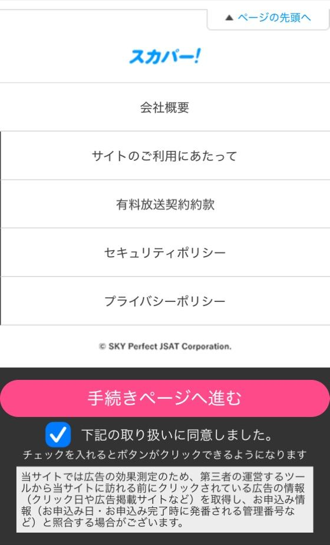
1申し込みボタンから進んだページの下で、「下記の取り扱いに同意しました。」にチェックを入れ、「手続きページへ進む」を押します。
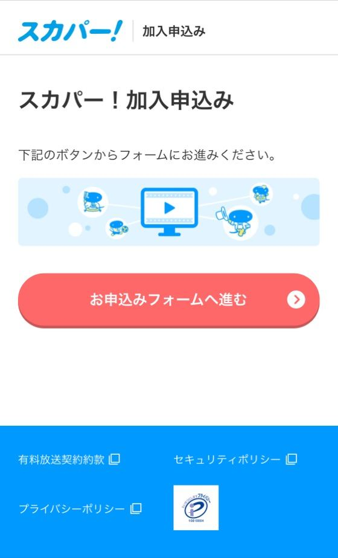
2「お申込みフォームへ進む」を押します。
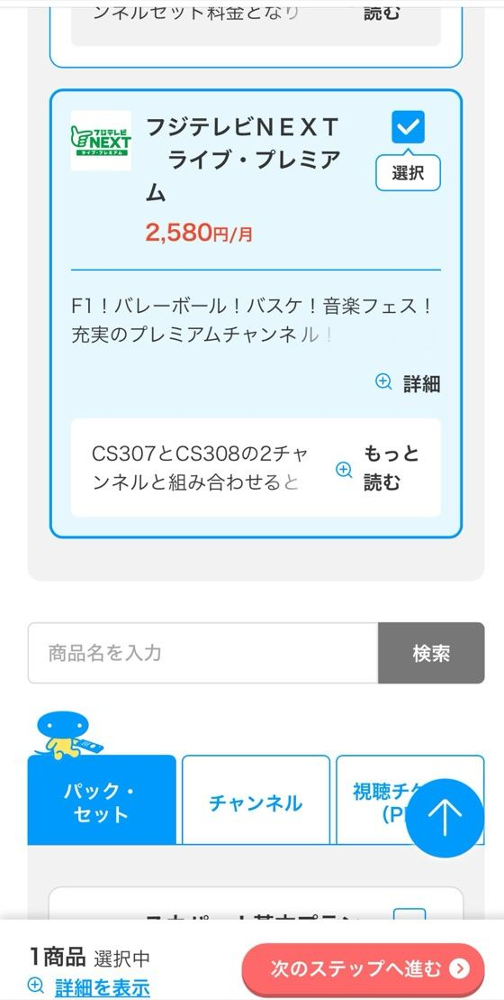
3「フジテレビNEXT ライブ・プレミアム」（2,580円/月）の「選択」にチェックを入れ、「次のステップへ進む」。見つからないときは、検索欄に「フジテレビNEXT」と入れます。
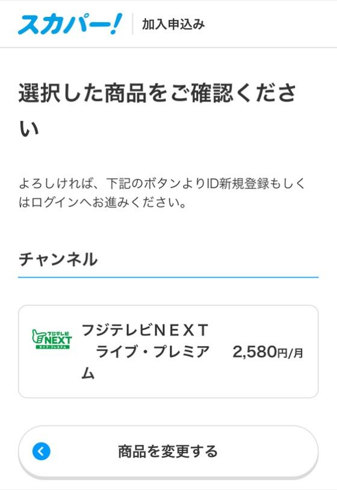
4選んだチャンネルを確認します。
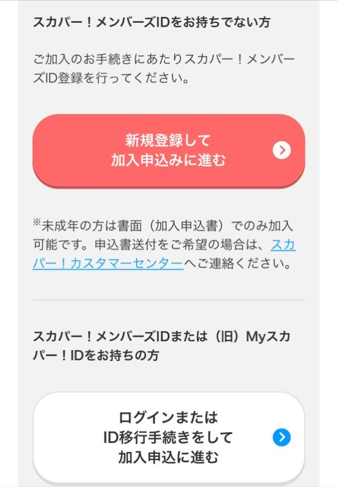
5スカパー!メンバーズIDがなければ「新規登録して加入申込みに進む」。持っている人はログインして進みます。
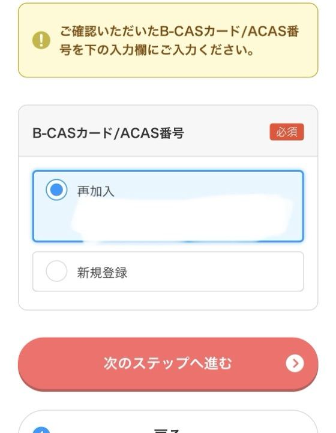
6テレビ・レコーダーのB-CASカード/ACAS番号を入力します。以前に契約したことがあれば「再加入」を選べます。
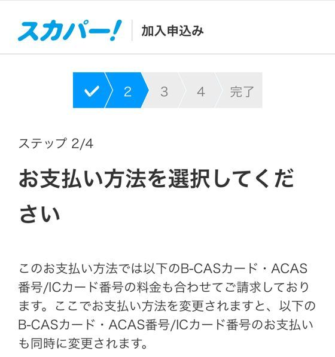
7お支払い方法を選びます（ステップ2/4）。
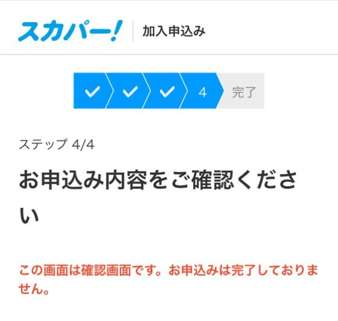
8申し込み内容を確認します（ステップ4/4）。この画面ではまだ申し込みは完了していません。
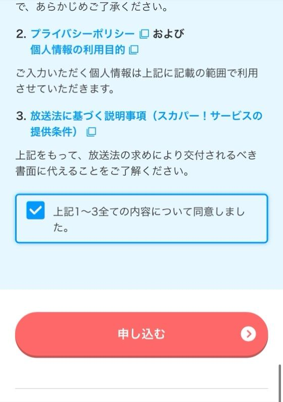
9規約などに同意するチェックを入れ、「申し込む」を押して完了です。
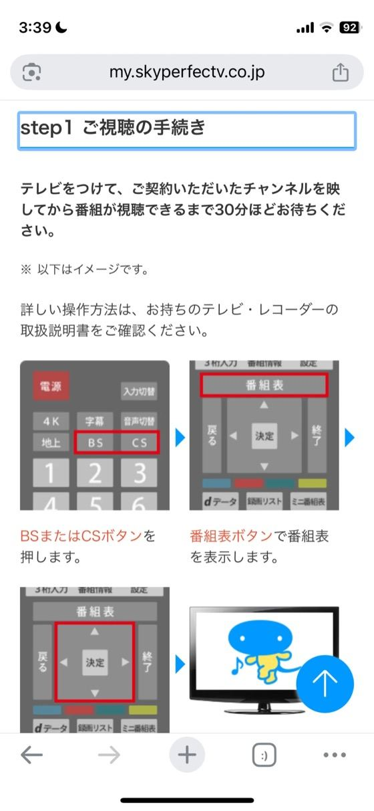
10テレビで見る場合は、契約したチャンネルをテレビに映して30分ほど待ちます。スマホ・PCで見る場合は、スカパー!番組配信にログインします。
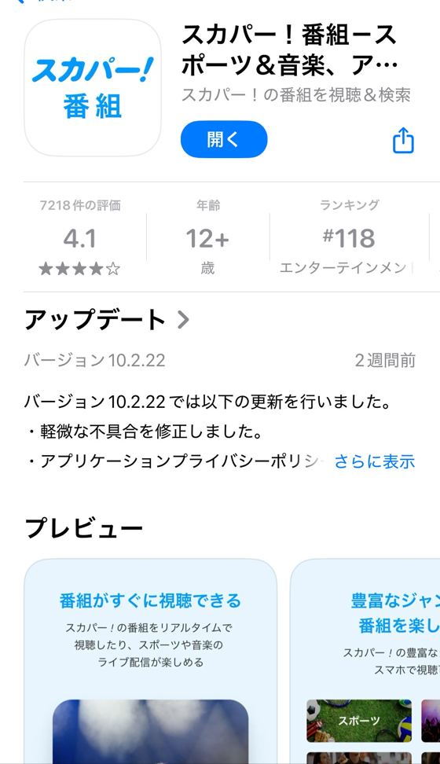
11スマホ・タブレットで配信を見るなら、アプリ「スカパー!番組」が便利です。スカパー!は、スマホ・タブレットではこのアプリでの視聴を案内しています（Androidはブラウザでは見られません）。
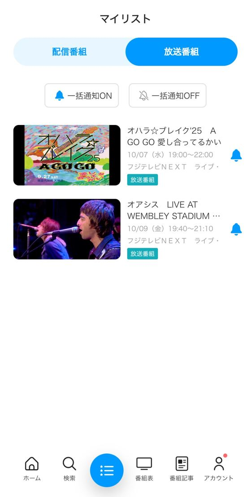
12アプリでは、見たい番組をマイリストに入れて通知をオンにしておけます。放送の見逃し防止に。
ご注意
- 番組によっては、ネット配信（スカパー!番組配信）の対象外になる場合があります。番組ページや番組表でご確認ください。
- 料金は2026年10月1日時点の公式情報です。最新の料金・条件はスカパー!の公式サイトでご確認ください。
- 加入した月が無料になるのは、新たに加入したときと、新たにチャンネルを契約したときです。解約したチャンネルを翌月に同じカード番号で契約し直した場合は、その月から料金がかかります。
- 加入した月は解約できません。解約の手続きは翌月以降にできます。
このサイトは、アクセス解析にGoogle アナリティクスを使っています。Cookieを使い、個人を特定しない形で利用状況を集めています。Googleによるデータの使用について